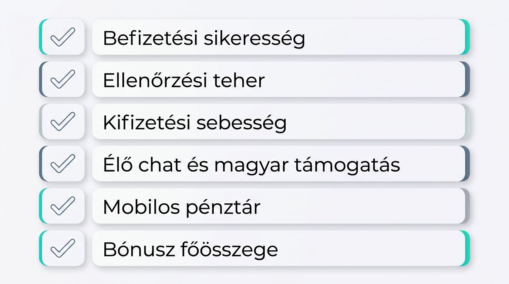
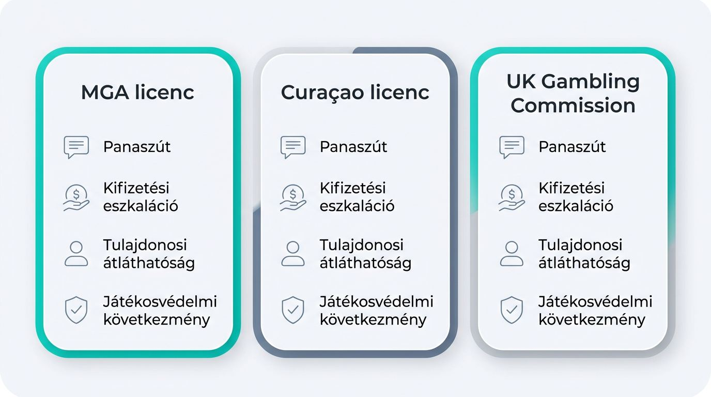
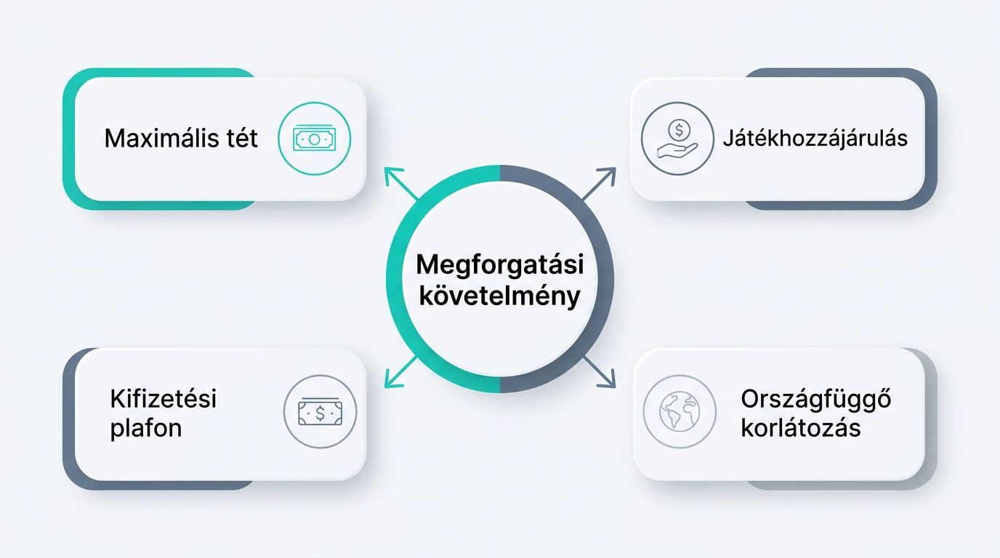
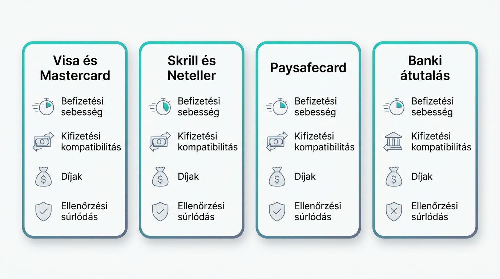
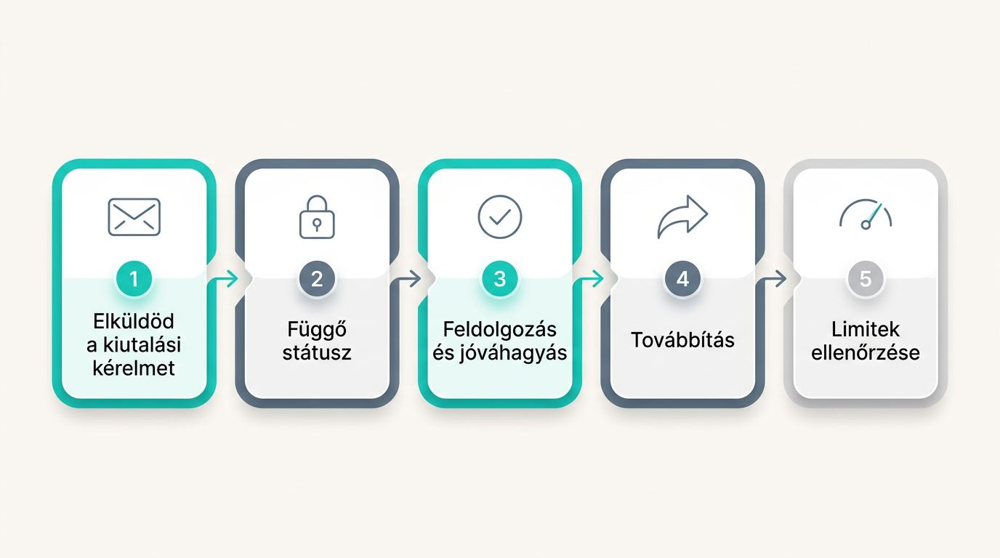

Külföldi online kaszinók magyar játékosoknak
Olyan külföldi online kaszinót keresel, ahol Magyarországról is gond nélkül befizethetsz, játszhatsz, majd kiutalhatod a nyereményedet. A széles játékkínálat és a nagy promóció akkor adnak valódi értéket, ha a forintos fizetés, a személyazonosság ellenőrzése és az ügyfélszolgálat is kezelhetők. Választáskor a kifizetés feltételei határozzák meg, mennyire marad használható a fiókod.

Külföldi online kaszinók összehasonlítása
Az egyedi online kaszinó oldalak eredményei, pontszámai és promóciói kizárólag a rangsorolt értékelésekben szerepelnek.
Így válassz külföldi online kaszinót Magyarországról
Egy külföldi kaszinó értékét a regisztrációtól a nyeremény megérkezéséig tapasztalt súrlódás alapján mérheted fel. A befizetés, azonosítás, ügyfélszolgálat és kifizetés egymásra épülő folyamat, ezért ezeket együtt érdemes vizsgálnod, mielőtt a bónuszok részleteire térnél.
A valódi használhatóság mérőszámai
Kisebb ajánlat is kedvezőbb lehet, ha a magyar befizetés átmegy, a KYC verification kezelhető, és a kifizetés feltételei világosak. A KYC személyazonosság-ellenőrzés, amely az accountodhoz való hozzáférést és a kiutalás idejét is érintheti. A külföldi kaszinó értékelésekben ezek legyenek a fő súlypontok.
- Befizetési sikeresség: A magyar kártyával vagy e-pénztárcával működő fizetési út közvetlenül meghatározza, el tudod-e kezdeni a játékot plusz költségek nélkül.
- Ellenőrzési teher: Az előre jelzett, egyszerűen teljesíthető KYC kevesebb számlakorlátozási és várakozási helyzetet jelent.
- Kifizetési sebesség: A közzétett feldolgozási idő segít felmérni, mikor férhetsz hozzá a nyereményhez.
- Élő chat és magyar nyelvű támogatás: A live chat support és a Hungarian-language support különösen akkor hasznos, ha dokumentumot kérnek vagy fizetési hiba történik.
- Mobilos pénztár: Olyan pénztárat válassz, amely telefonon is átlátható, mert a befizetés, a számlaellenőrzés és az ügyfélszolgálat gyakran mobilról történik.
- Bónusz főösszege: Ez másodlagos szempont, mert a nagy összeg önmagában nem javítja a ténylegesen használható értéket.
Regisztráció előtti hozzáférési ellenőrzések
A magyar játékosok fogadását még regisztráció és befizetési próbálkozás előtt ellenőrizned kell. Egy külföldi szerencsejáték oldal betöltődése nem bizonyítja, hogy Magyarországon számlát is nyithatsz vagy akár kifizetést is kérhetsz.
- Ellenőrizd a feltételekben, hogy Magyarország szerepel-e a támogatott regisztrációs országok között.
- Nézd meg magyar IP-címről a regisztrációs űrlapot és azt, elfogad-e magyar telefonszámot.
- Nyisd meg a pénztárat, és keresd meg a HUF-kezelést, valamint a ténylegesen elérhető fizetési módokat.
- Mobilböngészőben is próbáld ki az oldal navigációját, a belépést és a pénztár felületét.
- Olvasd el a támogatási dokumentációt, különösen a földrajzi korlátozásokról és fizetésekről szóló részt.
- A fizetési logókra ne alapozz önmagukban, mert nem garantálják a magyar befizetés vagy kifizetés sikerét egy külföldi online szerencsejáték oldalon.
Jogi helyzet és kaszinólicencek magyar játékosoknak

Egy nemzetközi kaszinó gyakorlati hitelességét a látható licenc, az üzemeltető tulajdonosi adatai, a panaszkezelés és a kifizetési szabályzat alapján mérheted fel. A hozzáférhetőség és a helyi engedélyezés külön kérdés: az MGA- vagy Curaçao-licenc nem azonos magyar engedéllyel. Az SZTFH, vagyis a Szerencsejáték Felügyelet Magyarország szerencsejáték-szabályozó hatósága, ezért személyes jogi döntés előtt ellenőrizd az aktuális hivatalos tájékoztatást a legális külföldi kaszinókról Magyarországon.
A szerencsejáték-licenc olyan hatósági engedély, amely meghatározza az üzemeltető felügyeleti keretét és a panaszkezelési lehetőségeket.
| Licenctípus | Panaszút | Kifizetési eszkaláció | Tulajdonosi átláthatóság | Játékosvédelmi következmény |
|---|---|---|---|---|
| Máltai Szerencsejáték Hatóság, MGA licenc | Közzétett hatósági és üzemeltetői panaszcsatorna | A szabályozói keretben kérhető további eljárás | Jellemzően részletesebb cégadatok | Erősebb tájékoztatási és panaszkezelési elvárások |
| Curaçao szerencsejáték-licenc | Az üzemeltetői folyamat és a licencadó adatai számítanak | A lehetőség az adott engedélyezési és üzemeltetői háttértől függ | Változó részletesség | Külön ellenőrizd a vitakezelést és a kifizetési szabályzatot |
| UK Gambling Commission | Szabályozott panasz- és vitarendezési keret | Egyértelműbb felügyeleti elvárások mellett történhet | Általában jól azonosítható | Szigorúbb játékosvédelmi és megfelelési elvárások |
Első befizetés előtti ellenőrzés: Keresd meg a licenc számát és joghatóságát, az üzemeltető nevét, elérhető tulajdonosi adatait, valamint azt a pontos utat, ahol egy elakadt kifizetést vagy számlavitát kezdeményezhetsz. A külföldi kaszinók engedélyei akkor adnak használható támpontot, ha ezek az adatok is láthatók.
Üdvözlő bónuszok valódi értéke

A külföldi kaszinó üdvözlő bónuszának hirdetett összege és a belőle kivehető érték gyakran eltér. A megforgatási követelmény azt mutatja meg, mekkora összeget kell tétként felhasználnod, mielőtt a bónuszhoz kapcsolódó pénz kifizethetővé válhat.
Külföldi kaszinók gyakori bónusztípusai
Minden bónuszformához más jogosító lépés tartozik, ezért a hozzá kapcsolódó feltételt hasonlítsd össze.
- Egyező befizetési bónusz: A kaszinó a kvalifikáló befizetés egy részét vagy egészét bónuszegyenleggel egészíti ki.
- Ingyenes pörgetés: Meghatározott nyerőgépen használható promóciós pörgetés, amelyhez külön játék- és jogosultsági szabály tartozhat.
- Befizetés nélküli bónusz: Regisztrációért vagy más feltétel teljesítéséért járhat, de gyakran szigorúbb kifizetési korlátozásokkal.
- Újratöltési promóció: Későbbi befizetéshez kapcsolódó bónusz, amely általában új kvalifikáló befizetést kér.
- Szezonális promóció: Ünnephez vagy kampányhoz kötött online szerencsejáték-ajánlat, amelynek időbeli és országonként eltérő feltételei lehetnek.
Feltételek, amelyek meghatározzák a bónusz értékét
Gyakran egyetlen szigorú kikötés dönti el, átváltható-e a bónusz valódi kifizetéssé. A megforgatásnál a játéklisták és az eltérő hozzájárulások is befolyásolják, mennyi tét szükséges.
| Feltétel | Jelentése | Gyakorlati hatása a használható kifizetési értékre |
|---|---|---|
| Megforgatási követelmény | Előírt tétmennyiség a kifizetés előtt | Magas követelménynél több pénzt kell játékon keresztül megforgatnod |
| Maximális tét | Bónusz alatt engedett legnagyobb fogadás | Túllépéskor a kaszinó érvénytelenítheti a bónuszhoz kötött nyereményt |
| Játékhozzájárulás | Egyes játékok eltérő mértékben számítanak bele | Kizárt vagy alacsony hozzájárulású játékokkal lassabban teljesül a feltétel |
| Kifizetési plafon | A bónuszból kivehető összeg felső határa | A nyereség egy része a plafon felett nem kérhető ki |
| Országfüggő korlátozás | Magyarországi számlára vonatkozó eltérő jogosultság | Előfordulhat, hogy az ajánlat nem aktiválható vagy más feltételekkel él |
Befizetési módok magyar kaszinójátékosoknak

Vonzó játék- vagy bónuszkínálat sem tesz használhatóvá egy oldalt, ha a választott fizetési útvonal Magyarországról nem működik be- és kifizetésre is. A külföldi kaszinó befizetési módoknál a sebesség, díj, limit és ellenőrzési teher mellett azt is nézd meg, visszaérkezhet-e ugyanarra az útra a pénz.
Bankkártyák, e-pénztárcák és utalványok
A legjobb fizetési mód az, amelyet magyar kibocsátással elfogadnak, és lehetőleg a befizetést és kifizetést is támogatja. A HUF-befizetés online kaszinóban csak akkor kényelmes, ha az adott pénztár valóban fogadja a választott módszert.
| Fizetési kategória | Magyar elérhetőség | Befizetési sebesség | Kifizetési kompatibilitás | Díjak | Ellenőrzési súrlódás |
|---|---|---|---|---|---|
| Visa és Mastercard | Kártyakibocsátótól és pénztártól függ | Többnyire gyors | Változó | Banki vagy átváltási díj előfordulhat | Közepes |
| Skrill és Neteller | Elérhetőség kaszinónként eltér | Gyors | Gyakran támogatott | Pénztárca- és átváltási díj lehetséges | Közepes |
| Paysafecard | Jellemzően befizetésre használható | Gyors | Általában nem azonos úton történik | Változó | Alacsony vagy közepes |
| Banki átutalás | Több szolgáltatónál elérhető | Lassabb lehet | Gyakran használható | Banki díj előfordulhat | Magasabb |
Az MNB által felügyelt bankok kártyái sem jelentenek automatikus elfogadást. A Visa és Mastercard tranzakciók eredményét a kibocsátó, a tranzakció típusa és az adott online casino pénztárának beállítása is befolyásolhatja.
HUF-kezelés, átváltási költségek és mobilfizetés
A HUF-kezelés a játékra maradó nettó összeget és a kifizetéskor kézhez kapott értéket is módosítja. Az átváltási díj közvetlen levonás, az árfolyamrés pedig a szolgáltató vételi és eladási árfolyama közötti különbség, amely mindkét irányban csökkentheti az összeget.
- Ellenőrizd, valódi HUF-egyenleget kapsz-e, vagy a rendszer csak átváltja a forintot más pénznemre.
- Nézd meg előre a HUF conversion fee, vagyis az átváltási díj összegét és az exchange rate spread, azaz árfolyamrés feltételeit.
- A Google Pay és Apple Pay csak akkor praktikus, ha a pénztár világos kifizetési alternatívát is mutat.
- Mobilon ellenőrizd, hogy a fizetési módok, limitek és pénznemek teljesen láthatók-e a pénztárban.
Kriptovalutás fizetés külföldi kaszinókban
A kriptovalutás fizetés önálló útvonal, ahol a befizetés, az átváltás és a kifizetés értékét külön kell ellenőrizned. Egy külföldi online casino oldalain a kriptós befizetés elérhetősége nem jelenti automatikusan azt, hogy ugyanabban az eszközben kérhetsz kifizetést.
- Ellenőrizd külön a kriptós befizetés és kifizetés támogatását.
- Nézd meg, szükséges-e átváltanod a kriptoeszközt a játék előtt.
- Számolj azzal, hogy az árfolyam változása módosíthatja a kifizetéskor kapott értéket.
- Vizsgáld meg a minimum- és maximumlimiteket, valamint a tranzakciók feldolgozási feltételeit.
Kifizetések külföldi kaszinóknál

Az átlátható kifizetési szabályzat előre megmutatja, mi történik a nyereményigénylés után, ezért alapvető választási szempont. A gyors kaszinó kifizetés ígérete csak a közzétett feldolgozási idővel, dokumentumigényekkel és ellenőrzési feltételekkel együtt értelmezhető. A kért KYC-dokumentumokat célszerű korán teljesítened, mert a személyazonosság-ellenőrzés, a pénzforrás igazolása, a bónuszvizsgálat vagy számlakorlátozás késleltetheti a kiutalást.
Kifizetési idők, limitek és függő kérelmek
A kifizetési út a kérés elküldésével indul, majd a tényleges feldolgozás előtt függő időszak is következhet. A gyors kaszinó kifizetést ezért a közzétett idők és limitek alapján hasonlítsd össze.
- Elküldöd a kiutalási kérelmet az elérhető kifizetési módok egyikére.
- A kérés függő státuszba kerülhet, mielőtt bekerül a kifizetési feldolgozási sorba.
- Az üzemeltető feldolgozza és jóváhagyja vagy további adatot kér.
- A választott szolgáltató továbbítja az összeget, amely akár a saját feldolgozási idejét is hozzáadhatja.
- Ellenőrizd a napi vagy havi limiteket, valamint azt, visszavonható-e a függő kérelem és milyen feltételekkel.
Az ellenőrzések és számlafelülvizsgálatok jelei
A közzétett ellenőrzési szabályok megmutatják, mi tarthatja fel a kifizetést. Azokat az üzemeltetőket helyezd előre, amelyek világosan leírják a kiváltó okokat.
- KYC időzítése: A személyazonossági okmány, lakcímigazolás vagy fizetési mód igazolása függő kifizetésnél is késedelmet okozhat.
- Forrásigazolás: A befizetett pénz eredetét igazoló dokumentumkérés meghosszabbíthatja a vizsgálatot és korlátozhatja az átmeneti hozzáférést.
- Bónuszvisszaélési szabályzat: A bónuszhasználat felülvizsgálata késleltetheti a bónuszhoz kötődő nyeremény jóváhagyását.
- Számlazárási feltételek: A közzétett feltételekből derüljön ki, milyen esetben korlátozhatják a számlát, és hogyan kezelik a függő kifizetést.
Játékok, élő kaszinó és mobilfunkciók összehasonlítása
A külföldi kaszinó játékok értékét az ellenőrizhető tisztességi adatok, az élő kaszinó választéka és a mobilos használhatóság alapján mérheted fel. Az online kaszinók Magyarországon akkor adnak jó élményt, ha a játék a választott eszközödön is jól elérhető.
RTP, RNG és a játékok tisztességessége
Az RTP és az RNG a játéklista átláthatóságának alapjelzései, egyetlen játékalkalom eredményét azonban nem ígérik meg. Az RTP a játékosoknak elméletileg hosszú távon visszaadott százalék, az RNG pedig a véletlenszám-generátor, amely a játékkimeneteleket meghatározza.
- Keresd a kaszinóban vagy a játék információs oldalán közzétett RTP-adatot.
- Nézd meg, szerepel-e független tesztelési bizonyíték, például eCOGRA, iTech Labs vagy GLI neve.
- Kezeld fenntartással azokat az online állításokat, amelyek RTP-adat vagy vizsgálati dokumentum nélkül ígérnek tisztességes játékot.
Szoftverszolgáltatók és élő kaszinó minősége
A használhatóság felméréséhez nézd meg az ismert fejlesztőket és az áttekinthető élő kaszinó előcsarnokot. A nemzetközi kaszinók kínálatában ezeket a funkciókat nézd meg.
- Fejlesztői választék: A NetEnt, Pragmatic Play, Evolution és Play'n GO jelenléte megkönnyíti a kedvelt játéktípusok megtalálását.
- Élő osztós asztalok: Egy élő kaszinó külföldi oldalon akkor előny, ha megfelelő rulett-, blackjack- és más asztalválasztékot ad.
- Keresés és szűrés: Mobilon különösen hasznosak a szolgáltató, játéktípus és élő asztal szerinti szűrők.
- Stabil kapcsolat: Az élő játék csak megfelelő betöltéssel és stabil mobilos működéssel marad kényelmes.
Mobilkaszinó-élmény Magyarországról
A jól működő mobilwebes felület lerövidíti a belépéstől a játékig, fiókkezelésig és ügyfélszolgálatig vezető utat. Befizetés előtt ellenőrizd a böngészőből elérhető funkciókat.
- Nyisd meg telefonon a játékokat, és nézd meg a betöltési sebességet.
- Próbáld ki, mennyire használható mobilon az élő kaszinó és a kereső.
- Ellenőrizd a magyar felület, illetve a magyar nyelvű ügyfélszolgálat elérhetőségét, főleg azonosítási és kifizetési ügyekhez.
- Nézd meg, elérhető-e asztali böngészős változat, ha a mobilos felület nem kényelmes.
Külföldi és hazai online kaszinók összevetése
A nemzetközi kaszinó akkor lehet jobb illeszkedés, ha a szélesebb választék nem okoz magyarországi fizetési, támogatási vagy kifizetési súrlódást. A külföldi és magyar online kaszinók összehasonlítása ezért gyakorlati választás, amelynél a feltételek és a használat kényelme számít.
Amiben a nemzetközi kaszinók előnyt jelenthetnek
Egy nemzetközi online kaszinó akkor lehet erősebb választás, ha több játékot és fizetési utat ad magyarországi akadályok nélkül.
- Fejlesztői kínálat: Több ismert szolgáltató jobb hozzáférést adhat a kedvelt játékokhoz.
- Élő kaszinó: Szélesebb asztalválaszték segíthet megfelelő tét- és játéktípust találni.
- Promóciók: Változatosabb ajánlatok között kereshetsz számodra kezelhető ingyenes pörgetés- vagy bónuszfeltételt.
- Fizetési utak: Több lehetőség adhat HUF-kompatibilis vagy kisebb súrlódású befizetést, ha a kiutalás is rendezett.
Amit választás előtt ellenőrizni kell
A határokon átnyúló használhatóság szolgáltatónként változik, ezért a közzétett szabályokat ellenőrizned kell. A külföldi kaszinó előnyei és hátrányai az online casino oldalakon a következő részletekből látszanak.
- Kártyás elfogadás: A pénztárban nézd meg, mely magyar kibocsátású kártyákat és fizetési módokat fogadják el.
- HUF átváltása: A pénztár pénznemoldalán ellenőrizd az átváltási díjat és az árfolyam kezelését.
- Támogatás nyelve: A segítségközpontban és élő chatben nézd meg, magyarul vagy csak angolul kapsz-e segítséget.
- Kifizetési felülvizsgálat: A kifizetési szabályzatból derüljön ki, mikor kérhetnek további dokumentumokat.
- Panaszút: Az általános feltételekben keresd a vitakezelési folyamatot és a kapcsolattartási adatokat.
Felelős játékhoz használható eszközök
A felelős szerencsejáték online kaszinóban akkor működik használható fiókfunkcióként, ha a limiteket és hozzáférési korlátozásokat gyorsan, támogatási késlekedés nélkül kapcsolhatod be. Befizetés előtt nézd meg, mely játékosvédelmi eszközök láthatók közvetlenül a fiókban.
Költési és játékidő-korlátok
A költési és játékidő-kontrollok akkor segítenek, ha közvetlenül a fiókból állíthatod be őket.
- Befizetési limit: A jövőbeli befizetések összegét korlátozhatod előre meghatározott időszakra.
- Veszteségi limit: Beállíthatod azt a veszteségküszöböt, amely után a rendszer leállítja a játékot.
- Játékidő-emlékeztető: Időjelzést kérhetsz, hogy lásd, mennyi ideje játszol.
- Lehűlési idő: Ideiglenesen szüneteltetheted a hozzáférést egy választott időszakra.
Önkizárás, életkor-ellenőrzés és fiókbiztonság
Az önkizárás, az életkor-ellenőrzés és a fiókbiztonság különböző módon védik a hozzáférést, ezért ezeknek már regisztráció előtt láthatóknak kell lenniük. Online szerencsejáték csak 18. életévüket betöltött személyeknek releváns.
- Önkizárás: A fiókból közvetlenül aktiválható korlátozás előnyösebb, mint a kizárólag ügyfélszolgálaton kérhető megoldás.
- Életkor-ellenőrzés: A kaszinó kérheti a kor igazolását, mielőtt teljes hozzáférést ad.
- Kétlépcsős hitelesítés: A two-factor authentication egy második belépési ellenőrzést ad a fiókodhoz, és általában közvetlenül bekapcsolható.
- Fiókkorlátozások kezelése: Ellenőrizd, milyen elérhetőséget ad az ügyfélszolgálat, ha a hozzáférésedet korlátozzák.
Külföldi kaszinónyeremények adózása Magyarországon
A külföldi kaszinónyeremény magyarországi adózása az adott szerencsejáték-ügylettől függhet, ezért ne feltételezz azonos eredményt minden kifizetésnél. Jelentősebb összeg kiutalása előtt őrizd meg a dokumentumokat, az MGA- vagy Curaçao-licenc önmagában nem dönti el az egyéni adókezelést.
- HUF-befizetési visszaigazolások
- Kifizetési bizonylatok
- Fizetési szolgáltatói kivonatok
- Bónuszadatok és feltételek
- Releváns fióklevelezés
Bizonytalan összeg, körülmény vagy adókezelés esetén kérj aktuális egyéni tanácsot adószakértőtől.
Gyakori kérdések a külföldi online kaszinókról
Letilthatja egy külföldi kaszinó a magyar IP-címet regisztráció után?
Igen, a szolgáltató módosíthatja az ország- vagy hozzáférési szabályait. Ellenőrizd az országlistát, a feltételeket és az ügyfélszolgálat közleményeit.
Mi történik az egyenleggel, ha a kaszinó regisztráció után módosítja a feltételeit?
Az egyenleg, a bónusz és a függő kifizetés kezelése az új feltételektől és az átmeneti szabályoktól függ. Nézd meg az értesítést, a bónuszszabályzatot és a kifizetési feltételeket.
Miért fordíthatnak vissza egy magyar bankkártyás befizetést?
A Visa vagy Mastercard befizetést a kibocsátó bank, a tranzakció típusa, a pénztár beállítása vagy ellenőrzési ok is visszautasíthatja. Nézd meg a pénztár alternatív módszereit és a banki tájékoztatást.